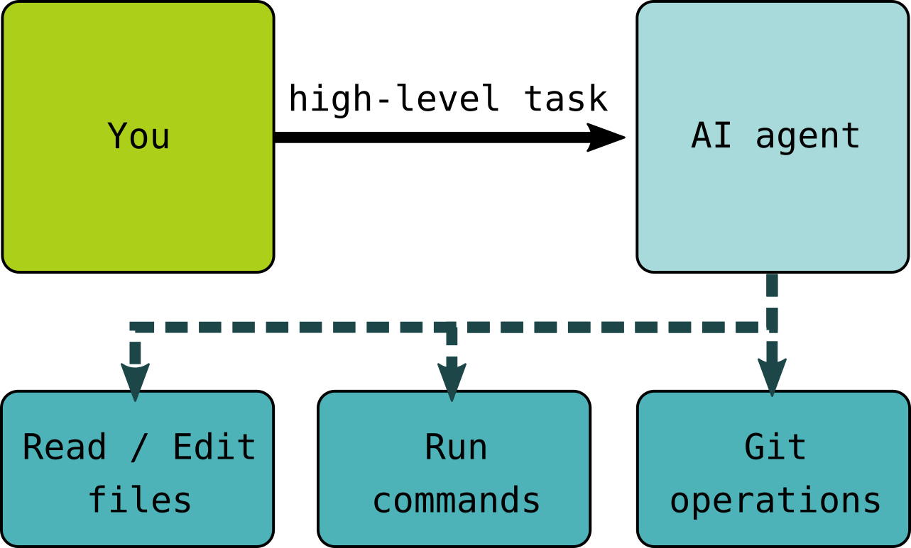

Introduction to LLMs for Code
Questions
What are Large Language Models (LLMs) and how do they generate code?
How are coding-specific models trained and fine-tuned?
What tools are available for AI-assisted coding?
Objectives
Understand the basic architecture and training process of code LLMs
Learn about open datasets used to train coding models
Get an overview of the current landscape of AI coding tools
Recognize the fundamental limitations and capabilities of these models
What is a Large Language Model?
A Large Language Model (LLM) is a type of artificial intelligence trained on vast amounts of text data to predict and generate human-like text. At their core, these models learn statistical patterns in language: given a sequence of words (or better tokens: fragments of words, commas, and anything in text), they predict what comes next.

When applied to code, LLMs benefit from the fact that programming languages are highly structured and follow consistent patterns. The model doesn’t “understand” code in the way humans do, but it has learned enough patterns to generate syntactically correct and often semantically meaningful code.
Key insight
LLMs are sophisticated pattern-matching systems, not reasoning engines. They excel at common patterns but can confidently produce incorrect code for novel or complex problems. Always verify AI-generated code.
Richard Stallman’s view on “AI”
“So I’ve come up with the term Pretend Intelligence. We could call it PI. And if we start saying this more often, we might help overcome this marketing hype campaign that wants people to trust those systems, and trust their lives and all their activities to the control of those systems and the big companies that develop and control them.”
Practitioner’s perspective: Simon Willison
“My current favorite mental model is to think of them as an over-confident pair programming assistant who’s lightning fast at looking things up, can churn out relevant examples at a moment’s notice and can execute on tedious tasks without complaint.
Over-confident is important. They’ll absolutely make mistakes—sometimes subtle, sometimes huge. These mistakes can be deeply inhuman—if a human collaborator hallucinated a non-existent library or method you would instantly lose trust in them.
Don’t fall into the trap of anthropomorphizing LLMs and assuming that failures which would discredit a human should discredit the machine in the same way.”
How are code LLMs trained?
Training a code LLM involves two main phases:
1. Pre-training
The model is exposed to massive amounts of code (and often natural language) to learn general programming patterns:
Model |
Training Data Size |
Languages |
|---|---|---|
StarCoder |
1 trillion tokens |
80+ languages |
StarCoder2 |
3.3-4.3 trillion tokens |
600+ languages |
CodeLlama |
Llama 2 base + code |
Multiple |
GPT-4 / Claude |
Undisclosed |
Multiple |
During pre-training, the model learns:
Syntax rules for various programming languages
Common coding patterns and idioms
Relationships between code and comments/documentation
How different parts of a codebase relate to each other
2. Fine-tuning and instruction tuning
After pre-training, models are often further refined:
Fine-tuning: Training on specific domains (e.g., scientific Python)
Instruction tuning: Teaching the model to follow human instructions
RLHF (Reinforcement Learning from Human Feedback): Aligning outputs with human preferences
Training cut-off dates matter
A crucial characteristic of any model is its training cut-off date—the date at which training data collection stopped. For coding, this has direct practical implications:
Impact |
Example |
|---|---|
Unknown libraries |
A library released after the cut-off won’t be suggested |
Breaking changes |
Major API changes since cut-off produce outdated suggestions |
Deprecated patterns |
Old syntax or methods may still be recommended |
Security updates |
Known vulnerabilities patched after cut-off won’t be reflected |
Key insight
The training cut-off date is sometimes not known. With chatbots, you can try asking the chatbot. What makes it even more challenging is that some AI systems also have “tools” attached to them, so they can fetch some up-to-date content, while mixing with what they have seen during their training. This can be a total success… or total disaster.
Pick a stable library, even if it is a little bit older: Choose Boring Technology.
Practical implications:
Check model documentation for training cut-off dates
Be skeptical of suggestions for rapidly-evolving libraries
Provide recent documentation or examples in prompts when using newer tools
Consider library stability as a factor in dependencies choices
Open datasets for training code LLMs
Understanding what data models are trained on helps us understand their capabilities and limitations.
Case study: OpenCodeInstruct (NVIDIA)
OpenCodeInstruct is a large open dataset for instruction-tuning code models.
Split |
Size |
Domain |
Key Features |
|---|---|---|---|
train |
~5M samples |
Generic + algorithmic coding tasks |
Includes prompts, solutions, unit tests, and execution feedback |
Important characteristics:
Released under CC BY 4.0
Designed for supervised fine-tuning (SFT) of coding models
Contains both generic coding instructions and algorithmic problem-solving tasks
Includes useful metadata such as unit tests, test execution status, and LLM-based quality judgments
Largely built from synthetic instruction generation rather than raw repository code
Discussion
Why is this dataset useful?
Consider these implications:
It is useful for teaching models to follow coding instructions, not just predict the next token
Because much of the data is synthetic, model behavior may reflect the style and biases of the generator models
It complements large code pretraining corpora such as The Stack rather than replacing them
The landscape of AI coding tools
AI coding assistants come in many forms. Here’s an overview of the major categories and tools:
Chatbots (Scenario I in this course)

General-purpose AI assistants accessed via web interface:
Tool |
Provider |
Key Features |
|---|---|---|
DuckDuckGo |
Privacy-focused, no account needed, free |
|
OpenAI |
GPT-4, web browsing, code interpreter |
|
Anthropic |
Large context window, artifacts |
|
Multimodal, Google integration |
Recommended for exercises: Duck.ai
For the exercises in this course, we recommend Duck.ai by DuckDuckGo. DuckDuckGo is known for its privacy-first philosophy—their search engine doesn’t track users, and this extends to their AI chat service.
Why Duck.ai for learning:
No account required: Start immediately without signup
Privacy by design: Your IP address is hidden from AI providers, chats are not used for training, and conversations are stored locally on your device (not on remote servers)
Free access: Includes Claude, GPT-4o mini, Llama, and Mistral models
Anonymous: DuckDuckGo proxies your requests so AI providers never see your identity
This makes it ideal for experimenting with AI coding assistance without
creating accounts or worrying about data retention policies. You can also
access it via duckduckgo.com/chat or by typing
!ai in DuckDuckGo search.
IDE-integrated assistants (Scenario II)

Warning
To-Do: This section needs expanding with more tools and/or kept up to date with new trends.
Tools that integrate directly into your development environment:
Tool |
Pricing |
Key Features |
|---|---|---|
Amazon Q Developer |
Free for individuals |
AWS expertise, security scanning |
Claude Code |
¢XX/mo |
Remote processing, large context window (depending on tier) |
Codeium |
Free core features |
70+ languages, Windsurf IDE |
Codex |
Pay-as-you-go |
GPT-4, API access |
Gemini Pro 3 |
3 pricing levels |
Multimodal, Google integration |
GitHub Copilot |
€XX/mo (free tier available) |
Most mature, broad language support |
OpenClaw |
¢XX/mo |
Local-first, privacy-focused |
Tabnine |
Free basic tier |
Privacy-focused, local models available |
Agentic coding tools (Scenario III)
{kind=link}

Warning
To-Do: This section needs expanding with more tools and/or kept up to date with new trends.
Autonomous agents that can write, test, and modify code:
Tool |
Provider |
Key Features |
|---|---|---|
Claude Code |
Anthropic |
CLI-based, git integration, sandboxing |
OpenAI Codex |
OpenAI |
CLI-based, git integration, sandboxing |
Gemini Pro 3 |
Multimodal, Google integration |
|
GitHub Copilot Workspace |
GitHub |
PR-based workflow |
Cursor |
Cursor Inc. |
AI-native IDE with agent mode |
Aider |
Open source |
Terminal-based, multiple model support |
The full spectrum is actually much broader
These three scenarios are a teaching simplification. In reality, AI coding tools exist on a spectrum with many hybrids: PR-native agents, review bots, orchestration tools, local-first options, and more. See Appendix I: The Full Spectrum of AI Coding Tools for an extended taxonomy.
Current adoption and trends
Warning
To-Do: This section needs expanding and/or kept up to date with data on current adoption trends.
From: Jellyfish AI Engineering Trends (17 March 2026) survey on 700 companies, 200K engineers, 20M pull requests: more than half use AI assisted coding, 64% generate a majority of their code with AI assistance.
Limitations to keep in mind
Before diving into specific scenarios, remember these fundamental limitations:
What LLMs cannot do
A typical generative AI system based on LLMs, without toolcall capabilities, cannot:
Verify their own output: They cannot run code or check if it works.
Access real-time information: Knowledge is frozen at training cutoff. Comment: A agent can connect to a process for collecting information/debugging. Is that considered “real-time information”?
Understand your specific context: They don’t know your data, infrastructure, or requirements unless you tell them.
Guarantee correctness: They optimize for “plausible”, not “correct”.
Common failure modes
Hallucinated packages: Suggesting libraries that don’t exist
Outdated APIs: Using deprecated functions or old syntax
Subtle bugs: Code that looks right but has edge-case failures
Security vulnerabilities: Not considering injection, authentication, etc.
Exercise: Explore an AI chatbot
Go to duck.ai (no account needed) and try the following:
Ask: “Write a Python function to calculate the standard deviation of a list”
Look at the response. Does it:
Use a built-in library or implement from scratch?
Handle edge-cases (empty list, single element)?
Include documentation?
Now ask: “What assumptions does this code make? What could go wrong?”
Finally, ask: “How would you test this function to ensure it’s correct?”
Share your reflection in the collaborative note document.
Solution
The exercise demonstrates several things:
AI can generate working code quickly
The code may not match your specific needs (maybe you wanted NumPy, or maybe you wanted the formula from scratch)
Follow-up questions help identify limitations
You should always review and test AI-generated code
Summary
In this section, we covered the foundations of AI-assisted coding:
LLMs generate code by predicting tokens based on patterns learned from training data
Open datasets like The Stack provide transparent training data for code models
Tools range from simple chatbots to fully autonomous agents
Understanding limitations is crucial for responsible use
See also
Warning
To-Do: This section needs expanding with more links and/or kept up to date.
StarCoder: A State-of-the-Art LLM for Code - BigCode project blog
The Stack v2 Paper - Technical details on training data
BigCode Project - Open scientific collaboration on code LLMs
Awesome-Code-LLM - Curated list of code LLM resources
Simon Willison: How I use LLMs to help me write code - Practical insights from an experienced practitioner
Keypoints
LLMs are pattern-matching systems trained on billions of lines of code
Training data (like The Stack) influences what models know and how they behave
Tools range from chatbots (high control) to agents (low control)
Always verify AI-generated code, as models cannot guarantee correctness